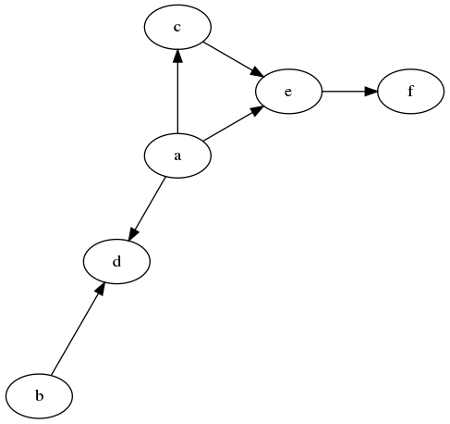
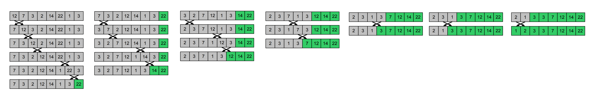
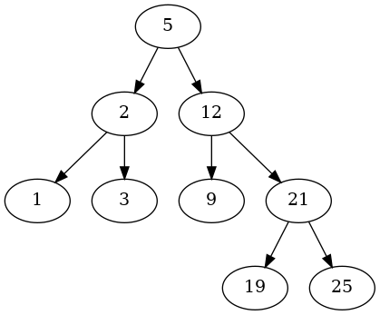

Module 2 - Midterm simulation test
This is the simulation of the second DS MidTerm exam provided in December 2025.
Please, refer to Prof. Alessandro Romanel for any questions/comments on the theoretical part.
Solutions for the practical part will be provided later today (or tomorrow).
Theoretical part
Exercise 1
Given a list 𝐿 of 𝑛≥3 integer elements, please compute the asymptotic computational complexity of the following function, explaining your reasoning.
[66]:
def my_fun(L):
for i in range(3, len(L)):
k = 0
R = L[i]
tmp = []
while k < 3:
if k % 2 == 1:
R = R - L[k]
else:
R = R + L[k]
k += 1
tmp.append(R)
return sum(tmp)
Exercise 2
What is the topological sorting of a directed acyclic graph (DAG)? Briefly describe an algorithm to compute it and provide a possible topological view of the following DAG.

Practical part
Exercise 3
Bubble sort is a sorting algorithm that compares two adjacent elements and swaps them until they are in the intended order. Just like the movement of air bubbles in the water that rise up to the surface, the maximum element of the array moves to the end in each iteration. Therefore, it is called a bubble sort.
The idea is to scan multiple times the list (from the start) and every time when you find two elements in the wrong order you swap them. If they are in the right order you do nothing.
If at the end of a scan you did not swap any elements then your list is sorted
After the first scan the max is at the last position (green color), at the second scan the “second max” is at the second-last position and so on.
Below you can see and example of the bubble sort execution

Implement the bubble sort algorithm by filling the sort method below
Then, test it on a random array of 500 elements and check its correctness.
[ ]:
import random
class SortingAlgorithm:
def __init__(self, data, verbose = True):
self.data = data
self.comparisons = 0
self.operations = 0
self.verbose = verbose
def getData(self):
return self.data
def getOperations(self):
return self.operations
def getComparisons(self):
return self.comparisons
def sort(self):
raise NotImplementedError
class BubbleSort(SortingAlgorithm):
def sort(self):
self.comparisons = 0
self.operations = 0
"""
to implement
"""
if __name__ == "__main__":
d = [7, 5, 10, -11 ,3, -4, 99, 1]
print("Before sorting:\n")
print(d)
bubSorter = BubbleSort(d, verbose = True)
bubSorter.sort()
print("After sorting:\n")
print(d)
Before sorting:
[7, 5, 10, -11, 3, -4, 99, 1]
After sorting:
[7, 5, 10, -11, 3, -4, 99, 1]
Exercise 4
A Binary Search Tree (BST) is a binary tree with the following properties:
The left subtree of a node contains only nodes with values lower than that of the node.
The right subtree of a node contains only nodes with values greater than the node’s.
No duplicate nodes are allowed.

TO DO
BST.search_interval(3,10) will return [3, 5, 9]
BST.search_interval(18,26) will return [19, 21, 25]
HINTS
You can both use a recursive or iterative solutions
If you choose the iterative one, consider to use a stack to visit nodes (i.e. save the one to visit, similar to a iterative pre-order DFS).
For each node, check if the node’s value falls within the interval [a, b].
If so, the value is added to the result list.
The traversal continues to the left child if the current value is greater than a, and to the right child if the value is less than b.
The result list is sorted before being returned to ensure ascending order.
[1]:
class BinarySearchTree:
def __init__(self, value):
self.__data = value
self.__right = None
self.__left = None
self.__parent = None
def getValue(self):
return self.__data
def setValue(self, newValue):
self.__data = newValue
def getParent(self):
return self.__parent
def setParent(self, tree):
self.__parent = tree
def getRight(self):
return self.__right
def getLeft(self):
return self.__left
def insertRight(self, tree):
if self.__right == None:
self.__right = tree
tree.setParent(self)
def insertLeft(self, tree):
if self.__left == None:
self.__left = tree
tree.setParent(self)
# START CODING BELOW HERE:
def search_interval(self, a, b):
result = []
# to implement
raise NotImplementedError
def createBST(intList):
BST = None
if len(intList) > 0:
BST = BinarySearchTree(intList[0])
for el in intList[1:]:
cur_el = BST
alreadyPresent = False
prev_el = None
while cur_el != None:
prev_el = cur_el
cv = cur_el.getValue()
if cv > el:
cur_el = cur_el.getLeft()
elif cv < el:
cur_el = cur_el.getRight()
else:
alreadyPresent = True
break
if not alreadyPresent:
node = BinarySearchTree(el)
node.setParent(prev_el)
if prev_el.getValue() > el:
prev_el.insertLeft(node)
else:
prev_el.insertRight(node)
return BST
def printTree(root):
cur = root
nodes = [(cur,0)]
tabs = ""
lev = 0
while len(nodes) >0:
cur, lev = nodes.pop(-1)
if cur.getRight() != None:
print ("{}{} (r)-> {}".format("\t"*lev,
cur.getValue(),
cur.getRight().getValue()))
nodes.append((cur.getRight(), lev+1))
if cur.getLeft() != None:
print ("{}{} (l)-> {}".format("\t"*lev,
cur.getValue(),
cur.getLeft().getValue()))
nodes.append((cur.getLeft(), lev+1))
# DO NOT modify code below:
if __name__ == "__main__":
inList = [5,2,1,3,12,9,21,19,25]
BST = createBST(inList)
print("Tree:\n")
printTree(BST)
res = BST.search_interval(3,10)
print("\nValues in interval [3,10]: {}".format(res))
assert res == [3,5,9], "Test failed!"
res2 = BST.search_interval(18,26)
print("\nValues in interval [18,26]: {}".format(res2))
assert res2 == [19,21,25], "Test failed!"
Tree:
5 (r)-> 12
5 (l)-> 2
2 (r)-> 3
2 (l)-> 1
12 (r)-> 21
12 (l)-> 9
21 (r)-> 25
21 (l)-> 19
---------------------------------------------------------------------------
NotImplementedError Traceback (most recent call last)
Cell In[1], line 101
98 print("Tree:\n")
99 printTree(BST)
--> 101 res = BST.search_interval(3,10)
102 print("\nValues in interval [3,10]: {}".format(res))
103 assert res == [3,5,9], "Test failed!"
Cell In[1], line 36, in BinarySearchTree.search_interval(self, a, b)
34 result = []
35 # to implement
---> 36 raise NotImplementedError
NotImplementedError: